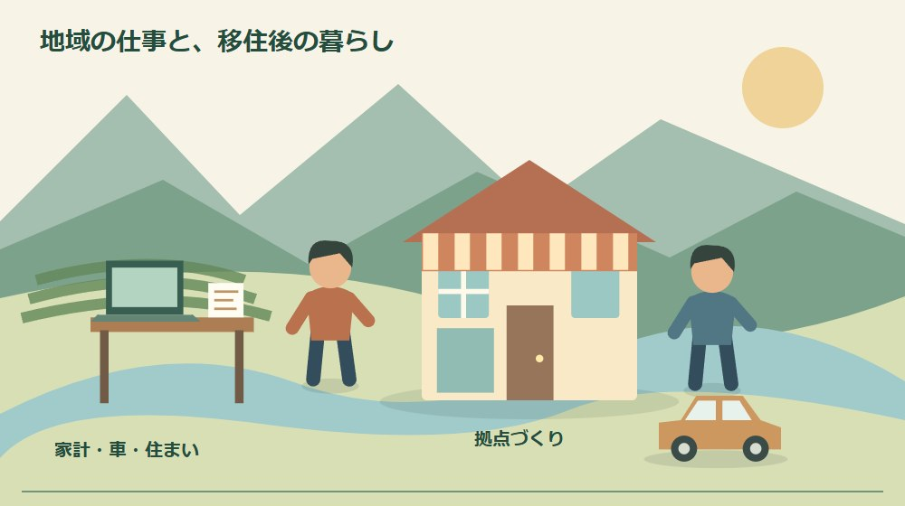
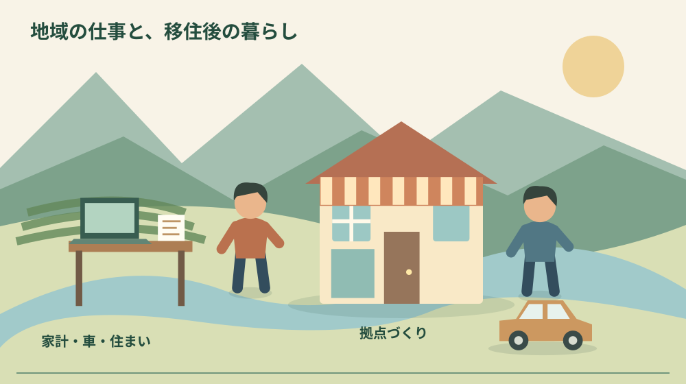
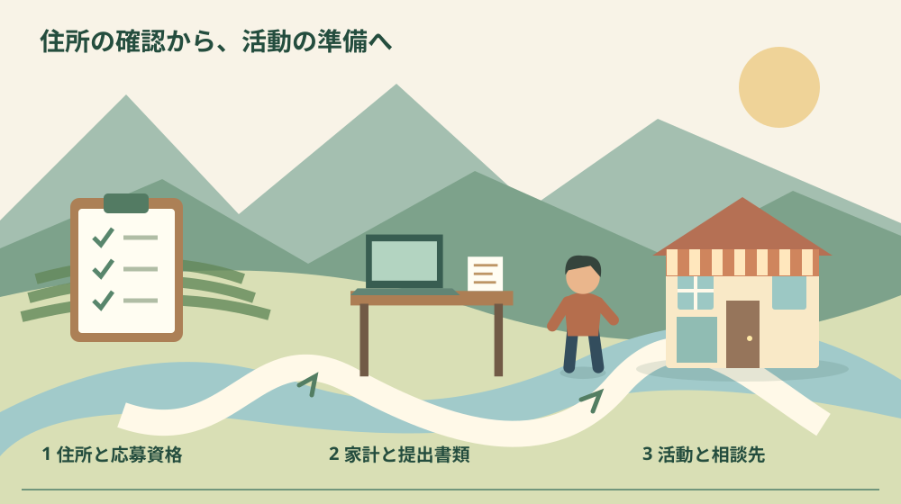

森町地域おこし協力隊募集｜応募前の生活条件

Q. 森町の地域おこし協力隊に応募する前に、何を確かめればいい？
森町は協力隊2人を2026年10月9日まで募集しています。月20日の活動が基本で、任期中の町内居住と住民票移転が条件です。月額227,000円は手取りではなく、町との雇用関係もありません。現地視察は応募期限後の10月11〜12日。今日は現在の居住地が応募条件に合うか一つ照合してください。
地域に関わる仕事を、家族の暮らしへ置いてみる
森町で人を迎える仕事は、案内する当日だけでは終わりません。施設を開ける準備、掃除、連絡、予定変更への対応があります。町の人がすでに担ってきた時間と手間の上に、新しい活動が加わります。担い手を増やすなら、入ってくる人の暮らしも続く形にする必要があります。
大石浩之（磐田市／不動産業）です。私は、地域で働きたいという気持ちを、転居の契約へ直結させない方がよいと考えます。応募資格、毎月の家計、家族の移動を一つずつ確かめる。地域への関心を長く保つためにも、生活条件を先に読む順序が合っています。
今回の対象は、森町が募集する地域おこし協力隊2人です。2026年9月9日更新の募集本文と掲載要綱を、10月4日に確認しました。日曜日のこの記事では、町外から移住して活動する応募者の判断材料を整理します。制度を利用して移住相談を受けたい人向けの案内とは分けています。
相談を利用する側の役割は、森町の移住コーディネーターの案内で整理しました。今回は、迎える側として働く条件を読む記事です。相談窓口があることと、その仕事を自分が担えることは別の問いになります。
事実整理｜募集2人、活動月20日、応募は10月9日まで
森町の募集本文では、活動内容を二地域居住・移住推進支援、拠点施設の運営、地域資源活用としています。活動日数は月20日が基本です。要綱ではおおむね週5日としながら、催しや地域の事情で変則的な日程になる場合も説明しています。平日の決まった時間だけの仕事とは読めません。
応募期間は2026年9月10日から10月9日までです。委嘱期間は年度ごとに更新し、最長3年。初年度は当該年度末までと募集概要にあります。応募した時点で3年間の活動が保証されるわけではないため、年度更新という条件を家族にも同じ言葉で共有します。
応募資格には、現在住んでいる地域の条件があります。募集本文は三大都市圏または地方都市のうち条件不利地域以外と案内しています。要綱は政令指定都市や一部条件不利地域も含め、対象区域を詳しく説明しています。町外に住んでいるだけで一律に対象とは判断できません。
任期中に森町へ住民票を移し、町内に居住できることも条件です。普通自動車運転免許はAT限定可。必須スキルにはプロジェクトマネジメントと、パソコン・オフィスソフトの基本的な使用経験が挙げられています。施設運営や新規事業、催しの企画経験は歓迎スキルとして別に示されています。
意外に見えるのは、二地域居住を支援する隊員自身には、森町への住民票移転と居住が求められる点です。支援を受ける人の暮らし方と、今回の応募者の条件は同じではありません。森町の特定居住促進計画を読む記事と合わせても、応募資格は今回の募集で確認してください。
募集要綱は、最初の拠点として商店街の旧衣料品店「びっくりや」を挙げています。完成した施設を引き継ぐのではなく、使い方を地域や行政、民間企業と考える段階から関わる説明です。仕事内容を、既に決まった受付業務だけだと思って応募すると、期待とのずれが生まれます。

月額227,000円を、手取りと混同しない
森町の募集上の報酬は月額227,000円です。要綱には町との雇用関係がないこと、国民健康保険と国民年金へ自己負担で加入することが書かれています。金額だけを前職の給与明細の振込額と並べると、比較する条件がそろいません。税や保険を引く前の数字として扱います。
住居の欄には月額30,000円を上限とする支援が示されています。転居費と生活備品は隊員負担です。家賃に支援があっても、引越し、家具、契約時の支出が消えるわけではありません。対象となる契約や支給の時期は、物件を契約する前に定住推進課へ確かめます。
車両は自家用車の持込みを求め、使用経費は月額25,000円が上限です。自賠責保険と任意保険は各自で加入する記載があります。車をまだ持っていない家族なら、毎月の燃料だけでなく、車の準備や駐車場を含めて考える必要があります。上限額が全員に一律支給されるとは読み替えません。
活動に使う旅費、消耗品、研修会等の費用には、町の予算の範囲で補助する説明があります。要綱は年2,000,000円程度と示していますが、自由に使える個人の所得ではありません。どの支出を事前に相談し、領収書をどう提出するかを確かめるための数字です。
私は、家計の紙を「毎月必ず出る費用」「転居時だけの費用」「活動費の精算」に分ける方法を勧めます。報酬、家賃支援、活動費補助を一つの収入欄へ足すと、手元に残るお金を大きく見積もりがちです。金額が分からない欄はゼロではなく未確認と書いて残します。
報告書や情報発信には自分のパソコンを用意することも要綱にあります。端末を持っていても、連絡や書類作成に使える環境かは別です。自宅の通信、家族と共用する時間、故障したときの代替を考えます。町が機材を全て貸してくれるという前提では準備しません。
家と車を決める前に、活動日の生活を描く
森町で住まいを探す際は、活動場所と家族の通勤・通学を一緒に見ます。物件の家賃が低くても、毎日の移動が長くなれば時間と車の費用が増えます。候補の住所から必要な場所へ実際に移動する経路を確かめ、地図の距離だけで決めないことを私は勧めます。
家族で車を1台使う場合は、誰が何時に使うかを書きます。隊員の活動で車が必要な日と、家族の通勤や送迎の日が重なれば調整が要ります。地域の人が毎回送ってくれると期待して穴を埋めるのではなく、自分たちで回せる移動と相談が必要な移動を分けます。
住まいを購入するか賃借するかは、応募の可否とは別に考えます。森町への移住で賃貸と購入を比べる記事でも、初期支出と維持負担を扱っています。採用や支援対象が確かでない段階で、募集記事だけを根拠に購入を決める必要はありません。
空き家を住居候補にするなら、写真の印象だけでは生活できる時期が分かりません。水回り、雨漏り、電気、通信、駐車場、修繕の手配を確認します。入居まで工事が必要な家と、そのまま住める家では準備が違います。現状と見積りは所有者や仲介業者に確かめてから家計へ入れます。
催しに合わせた活動日には、休日の家族予定との調整も生じます。私は、月20日という数だけで余暇を計算せず、平日・休日・夜間の想定を担当課へ聞きたいと考えます。具体的な勤務時間帯や休み方は今回確認した資料だけでは確定できません。分からないまま家族へ約束しないことです。
良い点｜何を担うかと、必要な技能が見える
今回の募集で良いと私が感じるのは、移住相談、拠点、地域資源という活動の方向が明示されていることです。漠然と地域を元気にするという説明だけでは、自分の経験をどこへ使うか考えにくい。企画を組んだ経験や人の話を聞く仕事を、募集の役割と照合する入口があります。
必須スキルと歓迎スキルを分けている点も、応募を考える側の助けになります。私は、全部の経験がなければ応募できないと諦める前に、必須条件を先に読む方法がよいと考えます。反対に、意欲だけで条件を満たしたと考えず、何を扱えるかを具体例にして応募書類へ示します。
町の「森町地域おこし協力隊について」は、地域外の人材が活動に関わり、活動後の起業や就業を通じた定住へつなぐ制度だと説明しています。私は、任期中の成果だけでなく、その先の暮らしを考える視点を評価します。3年後の仕事を町が保証しているという意味にはしません。
録画による説明会視聴が案内されていることも、町外で働く人には使いやすい入口です。9月17日の開催時刻に予定を合わせられなかった人でも、情報を確認する手段が残ります。私は、質問の前に共通説明を見ておくことで、担当者と応募者の双方のやり取りを具体化できると考えます。
注文したい点｜視察の順番と委嘱期間を確認したい
希望者向けの現地視察は2026年10月11〜12日の1泊2日です。応募期限10月9日より後なので、視察をしてから書類を出す順序にはなりません。説明会申込者限定で、交通費と滞在費は実費です。この日程の前後関係は、家族の予定を組む段階で大きく書いておきたい箇所です。
私は、応募前に現地を見て判断したい人には、期限より前に何を確認できるかが明瞭だと助かると感じます。ただし、別日程の案内や個別案内が必ず受けられるとは分かりません。今日は疑問を一つ選び、録画で確認できるのか、担当課への照会が必要なのかを分けてください。
委嘱期間には、資料内で確認したい記載があります。募集概要は年度更新・最長3年ですが、要綱の選考欄には委嘱の日から令和11年3月末までという記載もあります。令和11年は2029年です。私はどちらかを独断で訂正せず、初年度と最終年度の扱いを担当課への質問に残します。
住所の地域区分も、募集本文の短い説明だけで自己判断しにくい部分です。要綱では条件不利地域の範囲などを細かく説明しています。私は、現在の市町村名と住所の区域を伝えて照合できる案内があると、無駄な書類取得を減らせると考えます。住所の該当確認を最初の一歩に置く理由です。
拠点づくりに関われる余地は魅力ですが、判断できる範囲、日々の相談相手、支出の承認方法までは確認が必要です。地域の担い手が忙しいまま、新しい人への説明を全て引き受ける形では負担が重なります。応募者側からも、相談の順序を一つ聞いておくことが仕事の準備になります。

対案・結論｜今日は応募資格を一つ照合する
応募を検討する今日の一歩は、現在の居住地を要綱の応募資格に照合することです。都道府県名だけで決めず、市町村と区域を確認します。不明なら、定住推進課移住交流係へ住所条件について照会します。窓口の電話番号は0538-85-6321です。
要綱の提出書類は、応募用紙2枚、住民票の写し、税金の滞納がないことを示す書類、運転免許証のコピーです。応募用紙は町公式ページから取得します。どの証明書が必要か不明なまま複数取り寄せず、提出書類の種類と取得先を確認してから準備してください。
提出方法、10月9日の締切時刻、郵送する場合の到着の扱いは、今回の確認範囲では確定していません。消印有効やオンライン提出可と推測せず、募集窓口へ尋ねます。書類を作り終えたことと、受け付けられたことを分け、提出後の控えも残すのが私の提案です。
必須スキルは、自分が実際に扱った仕事へ置き換えて書きます。予定を立てた、関係者へ連絡した、支出を管理したなど、できることを具体化します。経験していない施設運営を経験済みと書く必要はありません。未経験の領域と、学ぶ必要がある作業を分ける方が面接で話を進めやすくなります。
家族に残す記録｜応募と転居を別々の予定にする
家族で共有する一枚には、応募期限、提出した書類、結果通知を待つ連絡先、視察の予定を書きます。転居、住居契約、車、退職や勤務変更は別欄に置きます。応募したから引越し日も確定したと受け取られないよう、決まったことと未定のことを分けてください。
家計には本人だけでなく、家族の収入が変わる可能性も記入します。前の住居を残すなら、その家賃や維持費が重なる期間もあります。見積りに根拠がない欄を空けておけば、確認する順序が見えます。制度を読む時間が、家族の支出を具体化する時間になります。
大石の視点｜地域を支える人の生活を先に守る
私は、地域を支える仕事は、担う人の生活が回って初めて続くと考えます。意欲があるから保険や移動の負担を後回しにしてよいわけではありません。毎月の支出と相談先を確かめてから応募を決めることは、地域に対して消極的なのではなく、続く約束をするための準備です。
正直に言えば、未完成の拠点に関わる面白さと、生活の見通しをどこまで求めるかには私も迷います。最初から全て決まった仕事では生まれない出会いもあるからです。それでも、自分が引き受ける支出と、誰に相談できるかは曖昧にしたくありません。挑戦と生活の穴は分けて考えたい。
不動産の側から見ると、町に家があることと、その家で活動を続けられることは別です。住居の状態、車の置き場、通う場所、家族の予定がそろって初めて暮らしになります。森町の可能性を、来る人の無理で支えたくない。私は応募前の住所条件と生活費の確認から始める方を選びます。
まとめ｜10月9日の前に、条件を確かめる
森町地域おこし協力隊の応募期限は2026年10月9日です。2人募集、活動は月20日が基本で、居住地域、町内への転居、運転免許、必須スキルの条件があります。月額報酬と補助、自己負担を分けて読み、視察より先に応募期限が来る日程を確認してください。
今日は、現在の住所が条件に当てはまるかを一つ確かめれば前進です。応募しない判断になっても、二地域居住や別の仕事で森町に関わる道まで閉じるわけではありません。地域の担い手になる方法を、家族の暮らしが続く条件から選んでください。
よくある質問
二地域居住を支える隊員なら、住民票を移さず活動できますか？
今回の森町地域おこし協力隊募集は、任期中に森町へ住民票を移し、町内に居住できることが条件です。支援対象として説明される二地域居住と、隊員自身の居住条件は異なります。現在地の地域要件、普通自動車運転免許、必須スキルも併せて確認し、住所区分が不明なら定住推進課へ照会してください。
月額227,000円が、そのまま生活費に使える額ですか？
月額227,000円は募集上の報酬で、手取り額ではありません。要綱には町との雇用関係がなく、国民健康保険と国民年金は自己負担とあります。転居費や生活備品も隊員負担です。住居・車両の補助には上限があるため、支給条件と支払時期を確認し、税・保険を含む家計は個別に見積もってください。
現地視察をしてから応募できますか？
町が案内する希望者向け視察は2026年10月11〜12日で、応募期限の10月9日より後です。視察後まで応募を待てる日程ではありません。視察は説明会申込者限定、交通費と滞在費は実費です。録画視聴の案内と応募書類を先に確認し、提出方法や締切時刻など不明点は定住推進課へ尋ねてください。
実家や土地の資料を家族で整理する場合は、実家カルテも利用できます。売却未定でも使える本サイト運営会社の民間サービスです。森町や各団体の公式手続ではなく、利用は任意です。
公式情報源
2026年10月4日確認（2026年10月確認）。制度・数値・受付や利用条件は変わる場合があります。行動前に公式の最新案内を確認してください。個別の契約・税務・認定等の判断は担当窓口や専門家へ相談してください。